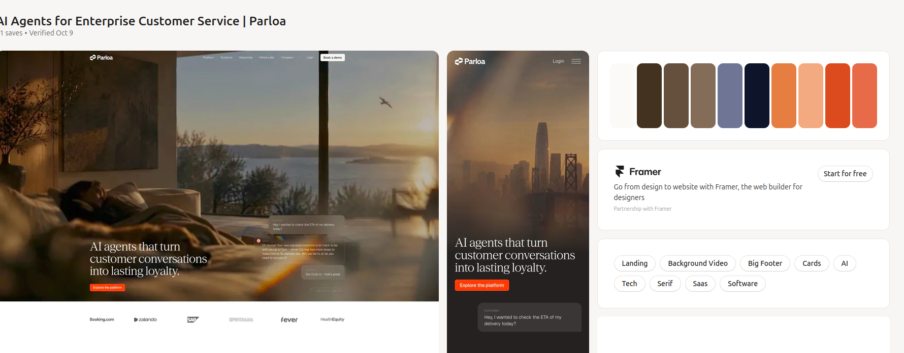

Parloa colour reference
Sampled from the supplied screenshot. A reference for the next Labs colour pass, with reusable CSS variables.
#FBFAF6--reference-ivory#443221--reference-deep-brown#65503E--reference-brown#846D58--reference-taupe#6F7695--reference-slate#0E152A--reference-navy#E67E41--reference-orange#F3AA80--reference-peach#DB4B1D--reference-vermilion#E76B49--reference-coralThese are screenshot samples, not official brand values. The landing page colours are unchanged.
Original reference
